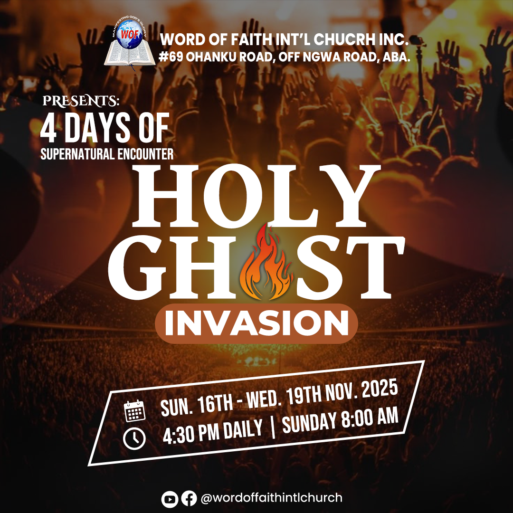
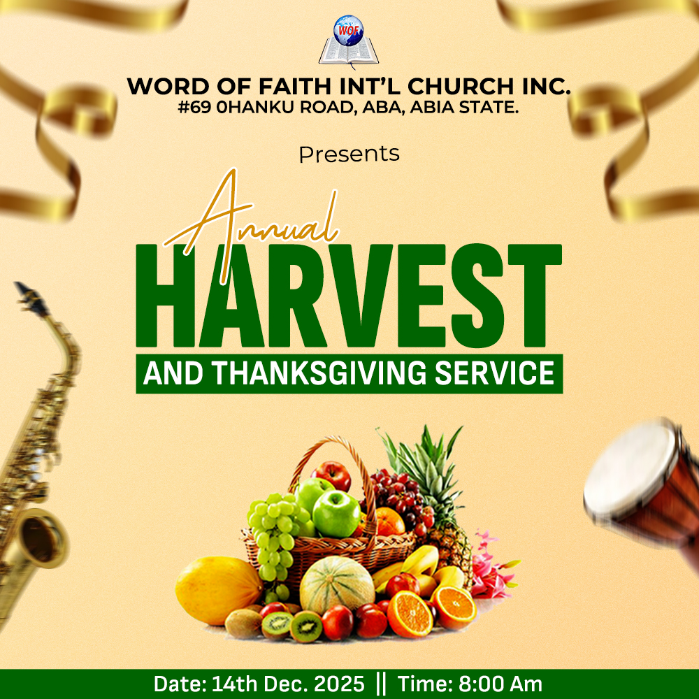
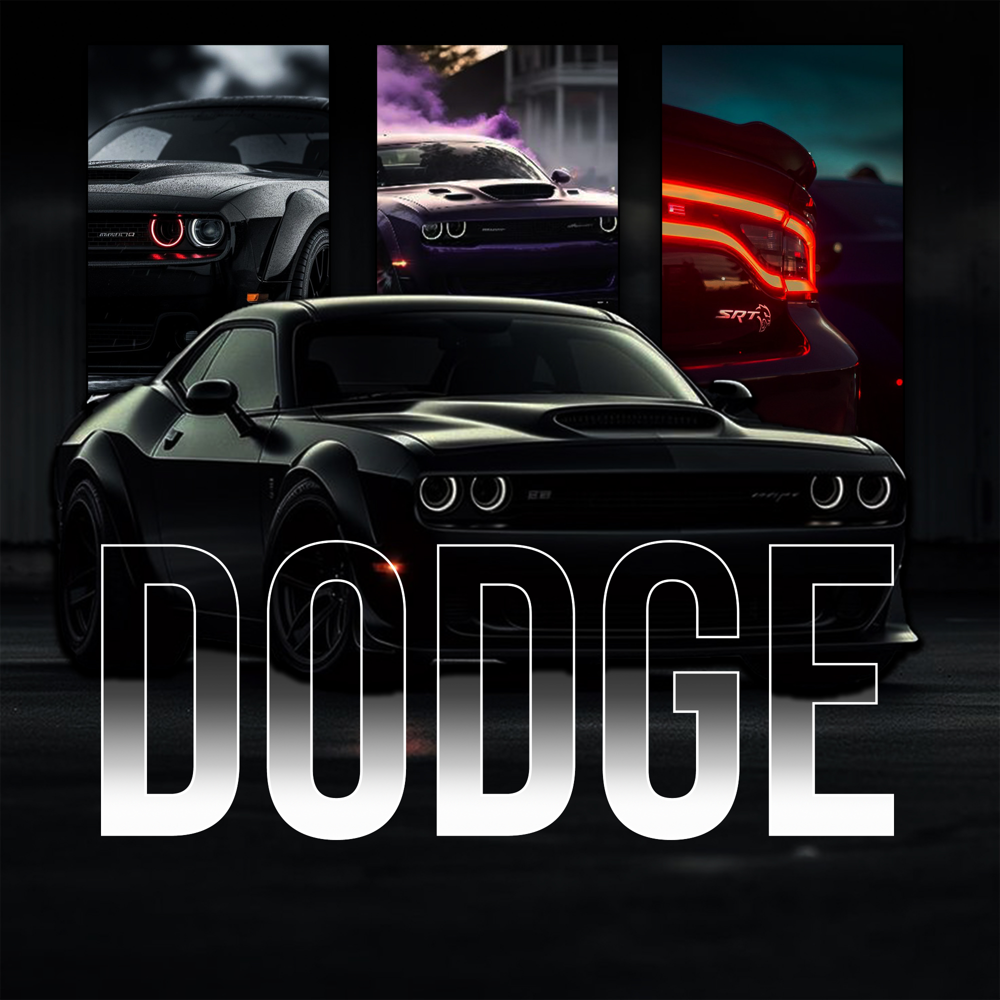
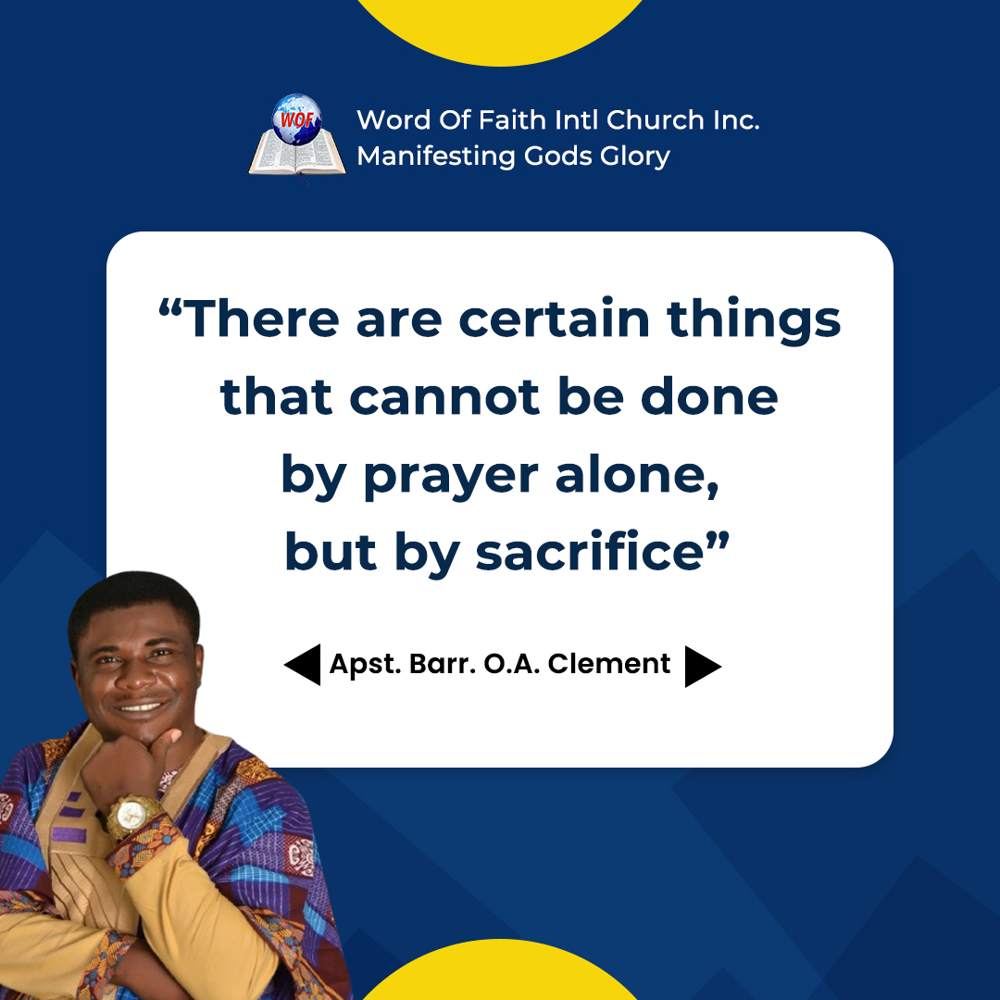
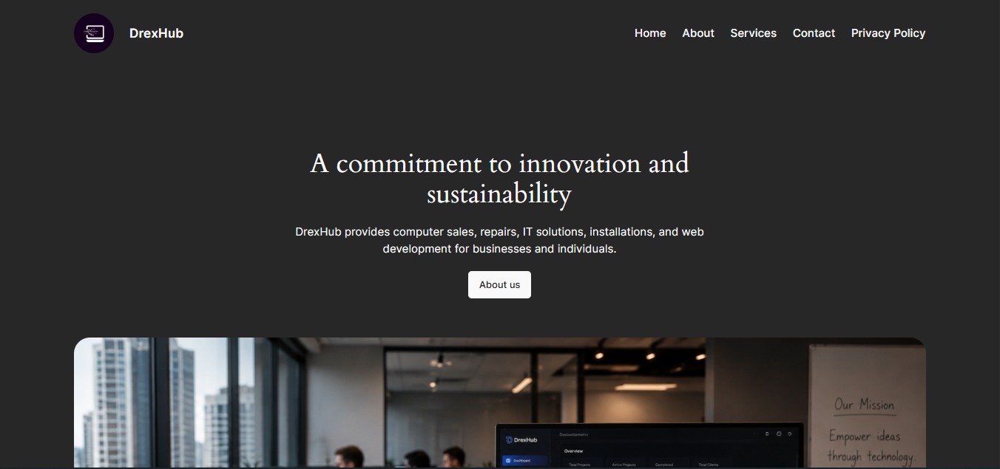
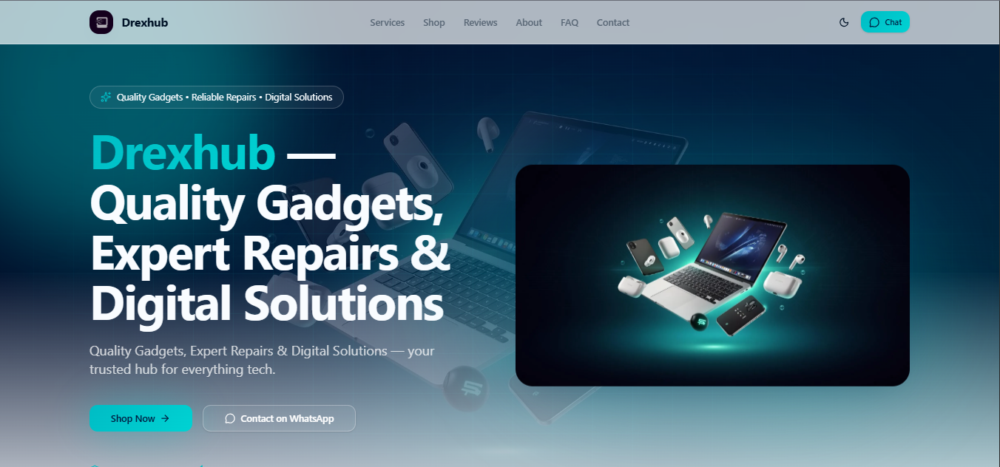
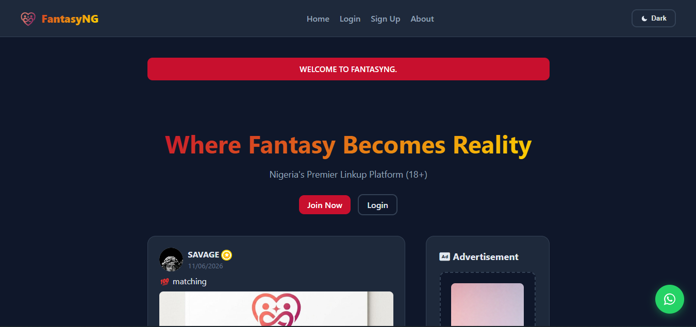

Design Work
Graphics







Hey, welcome to my portfolio, I'm
Technical Support Specialist · Frontend Developer · Creator
View My WorkWho I Am
Hi! I'm a Computer Engineering student with experience in frontend development, technical support, computer maintenance, and community leadership. Skilled in troubleshooting hardware and software issues, developing userfocused solutions, and collaborating with teams to improve digital platforms. Strong problem-solving, communication, and teamwork skills with a passion for technology and innovation.
Dr. Ogbonnaya Onu Polytechnic · Abia State, Nigeria
Focused on electronic design and prototyping, computer programming, and human-computer interaction.
Uma Ukpai Polytechnic · Abia State, Nigeria
Specialized in operating systems and hardware architecture. Participated in computer system troubleshooting and preventive maintenance.
Cisco Networking Academy
Cisco Networking Academy
HP Life
TopHill University of Ministerial Arts and Management Studies
Prince George Agroservices
FantasyNG · Remote
Prime Prestige Computers · Internship
DrexHub · Remote
What I Do
Design Work




My Work

A modern business website showcasing DrexHub’s technology services, company profile, and digital solutions with a clean, responsive design.

A responsive e-commerce platform designed to showcase products, simplify browsing, and deliver a seamless online shopping experience.

A social networking platform built to help users connect, share, discover communities, and build meaningful connections through an engaging digital experience.
Get In Touch
Have a project in mind or an opportunity to discuss? I'd love to hear from you. Let's build something exceptonal together.